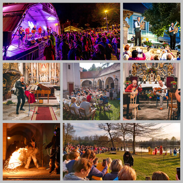

Kultura

Kultura je městem významně dotována. Kulturní programy jsou důležité nejen pro kvalitu života našich občanů, ale i jako součást turistické atraktivity města. Městské kulturní středisko – tzn. kulturní dům včetně nového tanečního sálu – je příspěvkovou organizací města a dlouhodobě nabízí velmi kvalitní program. Na pořádání menších kulturních a společenských akcí se podílí i Kulturní a informační centrum, kde se opět prolíná nabídka služeb pro občany a pro turisty. Do pořádání kulturních i společenských akcí se velmi aktivně zapojilo námi nově založené Centrum komunitních aktivit. Je až s podivem, kolik nového se konalo v letech, které byly tak poznamenány proticovidovými opatřeními. Dařilo se nám získávat finance na pořádání těchto akcí z dotací, odměn v soutěžích a významně nás podpořili i místní firmy.
Podařilo se
-
rozšířit program v rámci festivalu Karla Valdaufa.
-
přivést do města velmi známé spisovatele v rámci Svinenského čtení.
-
vydávat knihy spojené s historií našeho města i místních částí.
-
pořádat koncerty, čtení, loutkové pohádky, procházky městem atd. na zajímavých místech – v kostelích, na staré faře, na starém hřbitově, u Velkého rybníka, na Buškově hamru.
-
podpořili jsme konání Mikulášské nadílky i Beltainu.
Chceme
-
udržet koncept programu festivalu Karla Valdaufa, včetně pátečního programu.
-
pokračovat v pořádání a podpoře nových úspěšných projektů, využít nově objevené prostory především pro letní akce venku.
-
udržet kulturní program v Městském kulturním středisku.
-
v Městském kulturním středisku upravit vstupní prostory, bufet, šatnu, foyer.
-
pokračovat v podpoře činnosti ochotnického divadla.
-
dále podporovat zájem občanů podílet se na pořádání kulturních akcí.